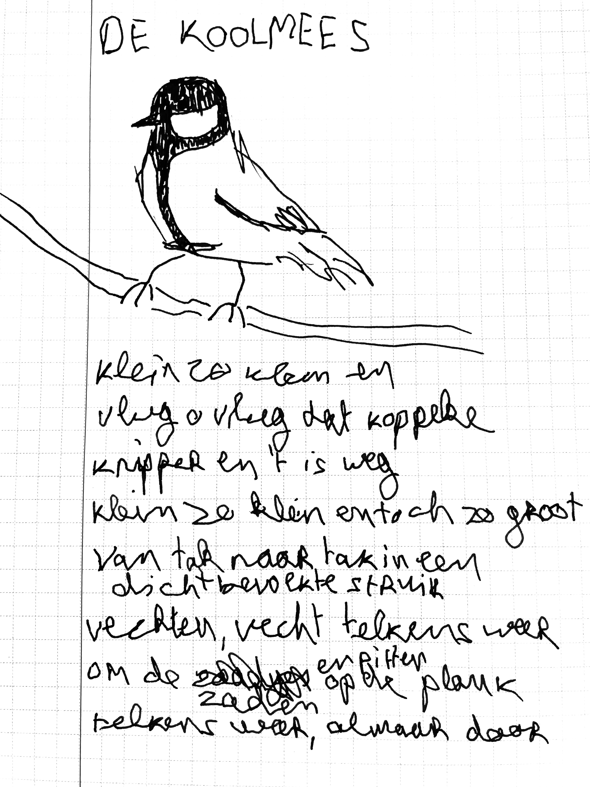

week of mar 24th: create an ode to an animal that you feel connected to in some way, whether it's an animal you see a lot, one native to your area, or just one that looks cool to you
|  | klein zo klein en vlug o vlug dat koppeke knipper en 't is weg klein zo klein en toch zo groot van tak tot tak in een dichtbevolkte struik vechten, vecht telkens weer om de zaden en pitten op de plank telkens weer, almaar door |